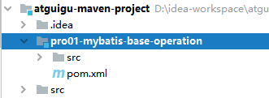

第一节 HelloWorld1、物理建模2、逻辑建模①创建Maven module②创建Java实体类3、搭建框架开发环境①导入依赖②准备配置文件[1]Mybatis全局配置文件[2]Mybatis映射文件5、junit测试代码
第一节 HelloWorld
1、物理建模
xxxxxxxxxx121CREATE DATABASE `mybatis-example`;23USE `mybatis-example`;45CREATE TABLE `t_emp`(6emp_id INT AUTO_INCREMENT,7emp_name CHAR(100),8emp_salary DOUBLE(10,5),9PRIMARY KEY(emp_id)10);1112INSERT INTO `t_emp`(emp_name,emp_salary) VALUES("tom",200.33);
2、逻辑建模
①创建Maven module

②创建Java实体类
实体类是和现实世界中某一个具体或抽象的概念对应，是软件开发过程中，为了管理现实世界中的数据而设计的模型。
实体类的多个不同的叫法：
domain：领域模型
entity：实体
POJO：Plain Old Java Object
Java bean：一个Java类
xxxxxxxxxx591/**2 * 和数据库表t_emp对应的实体类3 * emp_id INT AUTO_INCREMENT4 * emp_name CHAR(100)5 * emp_salary DOUBLE(10,5)6 *7 * Java的实体类中，属性的类型不要使用基本数据类型，要使用包装类型。因为包装类型可以赋值为null，表示空，而基本数据类型不可以。8 */9public class Employee {10 11 private Integer empId;12 13 private String empName;14 15 private Double empSalary;16 17 public Employee() {18 19 }20 21 public Integer getEmpId() {22 return empId;23 }24 25 public void setEmpId(Integer empId) {26 this.empId = empId;27 }28 29 public String getEmpName() {30 return empName;31 }32 33 public void setEmpName(String empName) {34 this.empName = empName;35 }36 37 public Double getEmpSalary() {38 return empSalary;39 }40 41 public void setEmpSalary(Double empSalary) {42 this.empSalary = empSalary;43 }44 45 46 public String toString() {47 return "Employee{" +48 "empId=" + empId +49 ", empName='" + empName + '\'' +50 ", empSalary=" + empSalary +51 '}';52 }53 54 public Employee(Integer empId, String empName, Double empSalary) {55 this.empId = empId;56 this.empName = empName;57 this.empSalary = empSalary;58 }59}
3、搭建框架开发环境
①导入依赖
xxxxxxxxxx301<dependencies>2 <!-- Mybatis核心 -->3 <dependency>4 <groupId>org.mybatis</groupId>5 <artifactId>mybatis</artifactId>6 <version>3.5.7</version>7 </dependency>8 9 <!-- junit测试 -->10 <dependency>11 <groupId>junit</groupId>12 <artifactId>junit</artifactId>13 <version>4.12</version>14 <scope>test</scope>15 </dependency>16 17 <!-- MySQL驱动 -->18 <dependency>19 <groupId>mysql</groupId>20 <artifactId>mysql-connector-java</artifactId>21 <version>5.1.3</version>22 </dependency>23 24 <!-- 数据源 -->25 <dependency>26 <groupId>com.alibaba</groupId>27 <artifactId>druid</artifactId>28 <version>1.0.31</version>29 </dependency>30</dependencies>
②准备配置文件
[1]Mybatis全局配置文件
习惯上命名为mybatis-config.xml，这个文件名仅仅只是建议，并非强制要求。将来整合Spring之后，这个配置文件可以省略，所以大家操作时可以直接复制、粘贴。
xxxxxxxxxx341 2 4 5<configuration>6 7 <!-- environments表示配置Mybatis的开发环境，可以配置多个环境，在众多具体环境中，使用default属性指定实际运行时使用的环境。default属性的取值是environment标签的id属性的值。 -->8 <environments default="development">9 <!-- environment表示配置Mybatis的一个具体的环境 -->10 <environment id="development">11 12 <!-- Mybatis的内置的事务管理器 -->13 <transactionManager type="JDBC"/>14 15 <!-- 配置数据源 -->16 <dataSource type="POOLED">17 18 <!-- 建立数据库连接的具体信息 -->19 <property name="driver" value="com.mysql.jdbc.Driver"/>20 <property name="url" value="jdbc:mysql://localhost:3306/mybatis-example"/>21 <property name="username" value="root"/>22 <property name="password" value="atguigu"/>23 </dataSource>24 </environment>25 </environments>26 27 <mappers>28 <!-- Mapper注册：指定Mybatis映射文件的具体位置 -->29 <!-- mapper标签：配置一个具体的Mapper映射文件 -->30 <!-- resource属性：指定Mapper映射文件的实际存储位置，这里需要使用一个以类路径根目录为基准的相对路径 -->31 <!-- 对Maven工程的目录结构来说，resources目录下的内容会直接放入类路径，所以这里我们可以以resources目录为基准 -->32 <mapper resource="mappers/EmployeeMapper.xml"/>33 </mappers>34</configuration>注意：配置文件存放的位置是src/main/resources目录下。
[2]Mybatis映射文件
相关概念：ORM（Object Relationship Mapping）对象关系映射。
- 对象：Java的实体类对象
- 关系：关系型数据库
- 映射：二者之间的对应关系
| Java概念 | 数据库概念 |
|---|---|
| 类 | 表 |
| 属性 | 字段/列 |
| 对象 | 记录/行 |

xxxxxxxxxx161 2 4 56<!-- mapper是根标签，namespace属性：在Mybatis全局范围内找到一个具体的Mapper配置 -->7<!-- 引入接口后，为了方便通过接口全类名来找到Mapper配置文件，所以通常将namespace属性设置为接口全类名 -->8<mapper namespace="com.atguigu.mybatis.dao.EmployeeMapper">910 <!-- 编写具体的SQL语句，使用id属性唯一的标记一条SQL语句 -->11 <!-- resultType属性：指定封装查询结果的Java实体类的全类名 -->12 <select id="selectEmployee" resultType="com.atguigu.mybatis.entity.Employee">13 <!-- Mybatis负责把SQL语句中的#{}部分替换成“?”占位符，在#{}内部还是要声明一个见名知意的名称 -->14 select emp_id empId,emp_name empName,emp_salary empSalary from t_emp where emp_id=#{empId}15 </select>16</mapper>注意：EmployeeMapper.xml所在的目录要和mybatis-config.xml中使用mapper标签配置的一致。
5、junit测试代码
xxxxxxxxxx311public void testSelectEmployee() throws IOException {3 4 // 1.创建SqlSessionFactory对象5 // ①声明Mybatis全局配置文件的路径6 String mybatisConfigFilePath = "mybatis-config.xml";7 8 // ②以输入流的形式加载Mybatis配置文件9 InputStream inputStream = Resources.getResourceAsStream(mybatisConfigFilePath);10 11 // ③基于读取Mybatis配置文件的输入流创建SqlSessionFactory对象12 SqlSessionFactory sessionFactory = new SqlSessionFactoryBuilder().build(inputStream);13 14 // 2.使用SqlSessionFactory对象开启一个会话15 SqlSession session = sessionFactory.openSession();16 17 // 3.根据Mapper配置文件的名称空间+SQL语句的id找到具体的SQL语句18 // 格式是：名称空间.SQL语句的id19 String statement = "com.atguigu.mybatis.dao.EmployeeMapper.selectEmployee";20 21 // 要传入SQL语句的参数22 Integer empId = 1;23 24 // 执行SQL语句25 Object result = session.selectOne(statement, empId);26 27 System.out.println("o = " + result);28 29 // 4.关闭SqlSession30 session.close();31}说明：
- SqlSession：代表Java程序和数据库之间的会话。（HttpSession是Java程序和浏览器之间的会话）
- SqlSessionFactory：是“生产”SqlSession的“工厂”。
- 工厂模式：如果创建某一个对象，使用的过程基本固定，那么我们就可以把创建这个对象的相关代码封装到一个“工厂类”中，以后都使用这个工厂类来“生产”我们需要的对象。